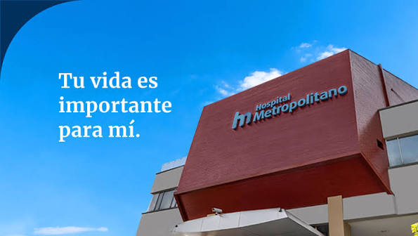
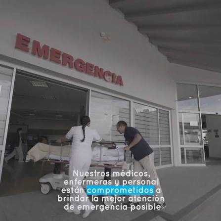
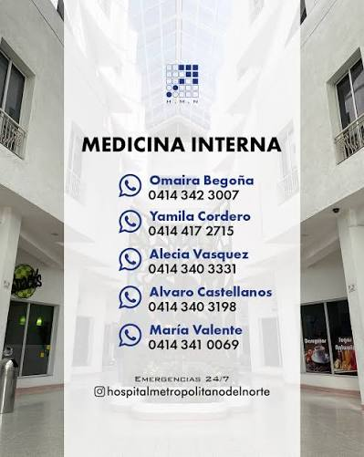
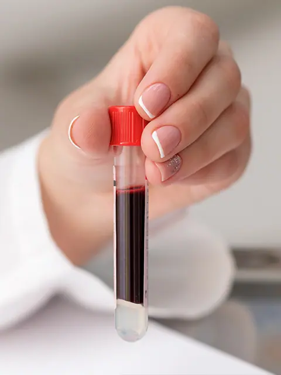

Bienvenidos a nuestro hospital

El Hospital Metropolitano Nueva Vida es una institución médica de vanguardia dedicada al cuidado integral de la salud. Contamos con infraestructura moderna, quirófanos inteligentes y un equipo multidisciplinario de especialistas comprometidos con el bienestar de cada paciente y su familia.
Nuestros Servicios Médicos
Ofrecemos cobertura médica integral con atención oportuna, diagnóstico preciso y seguimiento personalizado en todas nuestras áreas.
1. Emergencias y Trauma (24/7)

Atención inmediata para urgencias médicas, accidentes y pacientes críticos. Contamos con unidad de choque, ambulancias medicalizadas y especialistas de guardia permanente.
Incluye:
- Clasificación rápida por Triaje
- Traumatología y cirugía de emergencia
- Unidad de Cuidados Intensivos (UCI)
- Traslado en ambulancia equipada
2. Consulta Externa y Especialidades

Consultorios equipados para prevención, diagnóstico y control médico en más de 15 especialidades clínicas y quirúrgicas.
Especialidades principales:
- Medicina Interna y General
- Pediatría y Neonatología
- Cardiología y Neumología
- Ginecología y Obstetricia
- Dermatología y Nutrición
3. Laboratorio Clínico e Imagenología

Procesamiento automatizado de muestras biológicas y estudios de imagen de alta definición con entrega de resultados en línea el mismo día.
Estudios disponibles:
- Hematología, química sanguínea y pruebas inmunológicas
- Rayos X digitales de baja radiación
- Ecografía 4D y Doppler
- Tomografía Axial Computarizada (TAC)
Resumen de Atención y Requisitos
| Servicio | Modalidad | Requisitos | Tiempo de Espera |
|---|---|---|---|
| Emergencias | Sin cita previa (24/7) | Cédula de identidad (si es posible) | Inmediato (según Triaje) |
| Consulta Externa | Con cita agendada | Cédula y turno registrado | 15 a 25 minutos |
| Laboratorio Clínico | Orden de llegada | Pedido médico y ayuno (si aplica) | 10 a 20 minutos |
| Hospitalización | Orden médica o urgencia | Cédula del paciente y familiar responsable | Inmediato |
Importante: Para agilizar tu atención médica, registra previamente tus datos en nuestro Formulario de Historia Clínica.